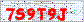
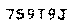
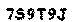
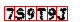
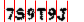
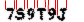
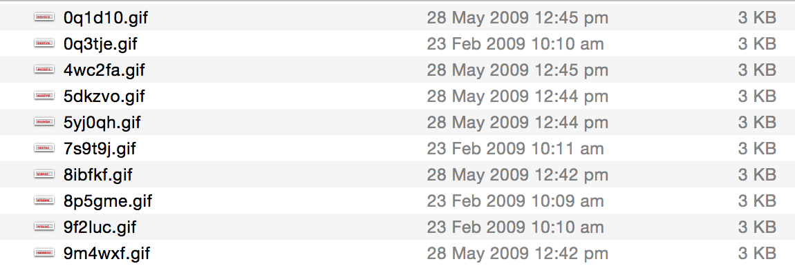
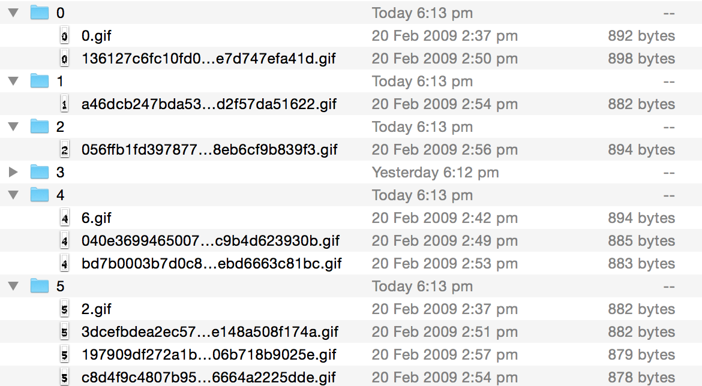

Decoding CAPTCHA's
for Fun and Profit using Python
Ben Boyter / @boyter
Legal/Disclaimer
This information is solely for information and educational purposes. I do not condone the use or act of ethical or unethical “hacking” nor circumvention of copy protection etc... The use of this code for any unethical or illegal purposes is not condoned by myself nor any other person(s) mentioned in this presentation.
Why Would you Release This?!
http://www.boyter.org/decoding-captchas/
There are some excellent tutorials and many published papers on it; BUT they are very light on algorithms or sample code.
It's what I wish existed when I was looking into the space.
Although I sometimes wish that had not written it...
What is a CAPTCHA?
A CAPTCHA is an implementation of a one way function.
Another example would be a hash function such as MD5 or SHA256
>>> hashlib.md5("captcha").hexdigest()
'70b29c4920daf4e51e8175179027e668'
One VERY important difference! It should be easy for a human to reverse and not a computer.
Example / Weaknesses
Was a real life CAPTCHA.
Single colour background, little noise, constant font, no mixing of case, characters aligned, no rotation, no deformation, same colour font, etc...
Extracting Text (DEMO)
Options include edge detection, horizontal blur, disjoint sets, multivalued image decomposition etc...
Multivalued Image Decomposition
from PIL import Image
from operator import itemgetter
im = Image.open("captcha.gif")
im = im.convert("P") # Convert to GIF
his = im.histogram()
values = {}
for i in range(256):
values[i] = his[i]
print his
for j, k in sorted(values.items(), key=itemgetter(1), reverse=True)[:10]:
print j, kResult
Pixel set 220

Pixel sets 220 and 227

What about?
Multicoloured backgrounds?
Multicoloured text?
Backgrounds with noise the same colour?
Multicolour text on multicolour backgrounds?
Identifying Character Locations
  How to know where the characters are?
Horizontal blur, fixed positions, vertical slices, letter dip checks, extract and test, disjoint sets.
Identifying Character Locations (DEMO)
Vertical Slices
for y in xrange(im2.size[0]): # slice across
for x in xrange(im2.size[1]): # slice down
pix = im2.getpixel((y, x))
if pix != 255:
inletter = True
if foundletter == False and inletter == True:
foundletter = True
start = y
if foundletter == True and inletter == False:
foundletter = False
end = y
letters.append((start, end))
inletter=False
Result
Each character is extracted


Image Recognition
Multiple options, neural network, support vector machines, bayesian classifier, vector space models, etc...
Each has its strengths and weaknesses.
Vector Space
import math
class VectorCompare:
def magnitude(self, concordance):
total = 0
for word, count in concordance.iteritems():
total += count ** 2
return math.sqrt(total)
def relation(self, concordance1, concordance2):
topvalue = 0
for word, count in concordance1.iteritems():
if concordance2.has_key(word):
topvalue += count * concordance2[word]
return topvalue /
(self.magnitude(concordance1) * self.magnitude(concordance2))
Vector Space Explained; works by finding the sortest distance between points in multidimensional space.
Training Set
The rule with training sets,
“One to train, one to verify”
Could build a corpus using random fonts with slight deformations using a pre-built collection.
But we can already extract the characters...
Building the Corpus
Download many CAPTCHA's and solve the manually. Use this to build the corpus.
Store as data or images? Data is usually faster, but can be less flexible.
count = 0
for letter in letters:
m = hashlib.md5()
im3 = im2.crop(( letter[0], 0, letter[1], im2.size[1] ))
m.update("%s%s" % (time.time(), count))
im3.save("./%s.gif" % (m.hexdigest()))
count += 1
Result
 Putting it Together
The final step. We have the text extractor, letter extractor, recognition technique and a corpus.
Load the Corpus
def buildvector(im):
d1 = {}
count = 0
for i in im.getdata():
d1[count] = i
count += 1
return d1
iconset =
['0','1','2','3','4','5','6','7','8','9','0','a','b','c','d','e','f','g','h','i','j','k','l','m','n','o','p','q','r','s','t','u','v','w','x','y','z']
imageset = []
for letter in iconset:
for img in os.listdir('./iconset/%s/'%(letter)):
temp = []
temp.append(buildvector(Image.open("./iconset/%s/%s"%(letter,img))))
imageset.append({letter:temp})
Where the Magic Happens (DEMO)
v = VectorCompare()
for letter in letters:
im3 = im2.crop(( letter[0] , 0, letter[1], im2.size[1] ))
guess = []
for image in imageset:
for x,y in image.iteritems():
if len(y) != 0:
guess.append( (v.relation(y[0], buildvector(im3)), x) )
guess.sort(reverse=True)
print "", guess[0]
Result
Degree of confidence and the guess for each letter.
(0.9637681159420289, '7')
(0.96234028545977, 's')
(0.9286884286888929, '9')
(0.9835037060984447, 't')
(0.9675116507250627, '9')
(0.9698971168877263, 'j')
Result 2
Trying on the whole data set
Correct Guesses - 13.0
Wrong Guesses - 39.0
Percentage Correct - 25.0
Percentage Wrong - 75.0
real 0m3.312s
user 0m3.012s
sys 0m0.088s
Works out to be over 100,000 sucessful cracks per 24 hours per CPU core.
Conclusion
Most of the bad results come from the letter O and number 0 and other instances of similar looking letters and numbers.
Issues where letters in the CAPTCHA are joined and our technique is unable to split them correctly.
This CAPTCHA is effectively cracked.
Conclusion 2
“Don’t write your own Crypto algorithms unless you have a Doctorate in Cryptography”
Unless you have a doctorate in machine learning don't write you own CAPTCHA.
If you are being targetted nothing will stop the bad guys.
For simple websites a honeypot field will be just as effective and annoy your users less.
Enjoy?
Check out my other project,
https://searchcode.com
Follow me on twitter @boyter